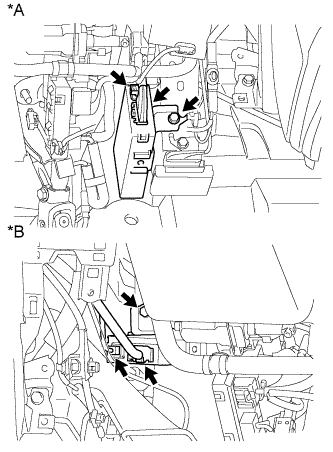

ЭБУ РЕМНЕЙ БЕЗОПАСНОСТИ > УСТАНОВКА |
| 1. УСТАНОВИТЕ ЭБУ РЕМНЕЙ БЕЗОПАСНОСТИ |
|  |
Установите ЭБУ ремней безопасности и закрепите его болтом.
| *A | Для моделей с левосторонним рулевым управлением |
| *B | Для моделей с правосторонним рулевым управлением |
Подсоедините 2 разъема.
| 2. УСТАНОВИТЕ ПОДУШКУ БЕЗОПАСНОСТИ № 1 ДЛЯ ЗАЩИТЫ НОГ В СБОРЕ |
 |
Подсоедините разъем.
Установите подушку безопасности в сборе и закрепите ее 4 болтами.
| 3. УСТАНОВИТЕ НИЖНЮЮ ОТДЕЛОЧНУЮ НАКЛАДКУ ПАНЕЛИ ПРИБОРОВ |
Подсоедините все разъемы и все кабели.
Для моделей без подушки безопасности для защиты коленей:
Установите нижнюю отделочную накладку панели приборов и закрепите ее 7 фиксаторами.
Для моделей с подушкой безопасности для защиты коленей:
Установите нижнюю отделочную накладку панели приборов и закрепите ее 14 фиксаторами.
Вверните 2 болта <C>.
Введите в зацепление 2 захвата, чтобы закрыть крышку.
| 4. УСТАНОВИТЕ НИЖНЮЮ КРЫШКУ ПАНЕЛИ ПРИБОРОВ № 1 В СБОРЕ |
Для моделей с левосторонним рулевым управлением:
Введите в зацепление 2 фиксатора и 2 направляющих, чтобы установить нижнюю крышку панели приборов № 1.
Заверните винт.
Для моделей с правосторонним рулевым управлением:
Введите в зацепление 3 фиксатора и 2 направляющих, чтобы установить нижнюю крышку панели приборов № 1.
Заверните винт.
| 5. УСТАНОВИТЕ НИЖНЮЮ ОТДЕЛОЧНУЮ НАКЛАДКУ ПАНЕЛИ ПРИБОРОВ |
Подсоедините все разъемы.
Установите отделочную накладку панели приборов и закрепите ее 4 фиксаторами.
| 6. УСТАНОВИТЕ ДЕКОРАТИВНЫЙ ЭЛЕМЕНТ ОБЛИЦОВКИ ПАНЕЛИ УПРАВЛЕНИЯ (для моделей с левосторонним рулевым управлением) |
Установите декоративный элемент отделочной накладки панели приборов и введите в зацепление 3 фиксатора.
| 7. УСТАНОВИТЕ ОБЛИЦОВКУ ОТДЕЛОЧНОЙ НАКЛАДКИ ПАНЕЛИ ПРИБОРОВ (для моделей с правосторонним рулевым управлением) |
Подсоедините все разъемы.
Установите облицовку отделочной накладки панели приборов и закрепите ее 4 фиксаторами.
| 8. УСТАНОВИТЕ ЛЕВУЮ БОКОВУЮ ПАНЕЛЬ ПРИБОРОВ (для моделей с левосторонним рулевым управлением) |
Введите в зацепление 5 фиксаторов, захват и 3 направляющие, чтобы установить боковую панель приборов.
| 9. УСТАНОВИТЕ ПРАВУЮ БОКОВУЮ ПАНЕЛЬ ПРИБОРОВ (для моделей с правосторонним рулевым управлением) |
Подсоедините разъем.
Введите в зацепление 5 фиксаторов, захват и 3 направляющие, чтобы установить боковую панель приборов.
| 10. УСТАНОВИТЕ БОКОВУЮ ОБЛИЦОВОЧНУЮ НАКЛАДКУ С ЛЕВОЙ СТОРОНЫ КОЖУХА (для моделей с левосторонним рулевым управлением) |
Введите в зацепление фиксатор и захват, чтобы установить боковую облицовочную накладку кожуха.
Установите фиксатор.
| 11. УСТАНОВИТЕ БОКОВУЮ ОБЛИЦОВОЧНУЮ НАКЛАДКУ С ПРАВОЙ СТОРОНЫ КОЖУХА (для моделей с правосторонним рулевым управлением) |
| 12. УСТАНОВИТЕ ОПОРНУЮ НАКЛАДКУ ЛЕВОЙ ДВЕРИ (для моделей с левосторонним рулевым управлением) |
Введите в зацепление 4 фиксатора, 10 захватов и 2 направляющие, чтобы установить опорную накладку двери.
| 13. УСТАНОВИТЕ ОПОРНУЮ НАКЛАДКУ ПРАВОЙ ДВЕРИ (для моделей с правосторонним рулевым управлением) |
| 14. ПОДСОЕДИНИТЕ ПРОВОД К ОТРИЦАТЕЛЬНОМУ ВЫВОДУ АККУМУЛЯТОРНОЙ БАТАРЕИ |
| 15. ПРОВЕРЬТЕ КОНТРОЛЬНУЮ ЛАМПУ АВАРИЙНОГО СОСТОЯНИЯ SRS |
Проверьте контрольную лампу аварийного состояния SRS (Нажмите здесь).